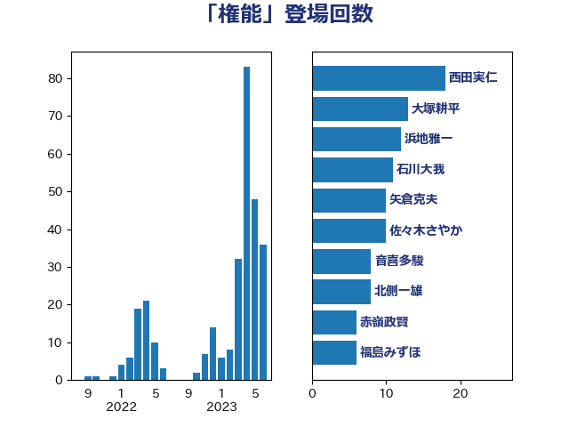

単語「権能」

| 西田実仁 | 公明党 | 18 回 |
| 大塚耕平 | 国民民主党 | 13 回 |
| 浜地雅一 | 公明党 | 12 回 |
| 石川大我 | 立憲民主党 | 11 回 |
| 矢倉克夫 | 公明党 | 10 回 |
| 佐々木さやか | 公明党 | 10 回 |
| 音喜多駿 | 日本維新の会 | 8 回 |
| 北側一雄 | 公明党 | 8 回 |
| 赤嶺政賢 | 日本共産党 | 6 回 |
| 福島みずほ | 社会民主党 | 6 回 |
| 林芳正 | 自由民主党 | 6 回 |
| 山本順三 | 自由民主党 | 6 回 |
| 中川正春 | 立憲民主党 | 6 回 |
| 新藤義孝 | 自由民主党 | 5 回 |
| 小西洋之 | 立憲民主党 | 5 回 |
| 緒方林太郎 | 無所属 | 4 回 |
| 盛山正仁 | 自由民主党 | 4 回 |
| 熊谷裕人 | 立憲民主党 | 4 回 |
| 打越さく良 | 立憲民主党 | 4 回 |
| 岸田文雄 | 自由民主党 | 4 回 |
| 礒崎哲史 | 国民民主党 | 3 回 |
| 牧野たかお | 自由民主党 | 3 回 |
| 古賀友一郎 | 自由民主党 | 3 回 |
| 北神圭朗 | 無所属 | 3 回 |
| 中川康洋 | 公明党 | 3 回 |
| 金子道仁 | 日本維新の会 | 2 回 |
| 進藤金日子 | 自由民主党 | 2 回 |
| 足立康史 | 日本維新の会 | 2 回 |
| 稲富修二 | 立憲民主党 | 2 回 |
| 玉木雄一郎 | 国民民主党 | 2 回 |
| 柴田巧 | 日本維新の会 | 2 回 |
| 柴山昌彦 | 自由民主党 | 2 回 |
| 岩谷良平 | 日本維新の会 | 2 回 |
| 山田勝彦 | 立憲民主党 | 2 回 |
| 小野泰輔 | 日本維新の会 | 2 回 |
| 小林一大 | 自由民主党 | 2 回 |
| 安江伸夫 | 公明党 | 2 回 |
| 奥野総一郎 | 立憲民主党 | 2 回 |
| 塩川鉄也 | 日本共産党 | 2 回 |
| 加藤明良 | 自由民主党 | 2 回 |
| 青山繁晴 | 自由民主党 | 1 回 |
| 阿部知子 | 立憲民主党 | 1 回 |
| 野田佳彦 | 立憲民主党 | 1 回 |
| 赤池誠章 | 自由民主党 | 1 回 |
| 萩生田光一 | 自由民主党 | 1 回 |
| 菅義偉 | 自由民主党 | 1 回 |
| 篠原孝 | 立憲民主党 | 1 回 |
| 秋葉賢也 | 自由民主党 | 1 回 |
| 石破茂 | 自由民主党 | 1 回 |
| 松本剛明 | 自由民主党 | 1 回 |
| 東徹 | 日本維新の会 | 1 回 |
| 杉尾秀哉 | 立憲民主党 | 1 回 |
| 末松信介 | 自由民主党 | 1 回 |
| 新垣邦男 | 立憲民主党 | 1 回 |
| 後藤茂之 | 自由民主党 | 1 回 |
| 川合孝典 | 国民民主党 | 1 回 |
| 岡田克也 | 立憲民主党 | 1 回 |
| 山添拓 | 日本共産党 | 1 回 |
| 山下雄平 | 自由民主党 | 1 回 |
| 山下貴司 | 自由民主党 | 1 回 |
| 小沢雅仁 | 立憲民主党 | 1 回 |
| 小林鷹之 | 自由民主党 | 1 回 |
| 寺田学 | 立憲民主党 | 1 回 |
| 大串博志 | 立憲民主党 | 1 回 |
| 城井崇 | 立憲民主党 | 1 回 |
| 吉田統彦 | 立憲民主党 | 1 回 |
| 吉田宣弘 | 公明党 | 1 回 |
| 古川直季 | 自由民主党 | 1 回 |
| 中野洋昌 | 公明党 | 1 回 |
| 中西祐介 | 自由民主党 | 1 回 |
| 三木圭恵 | 日本維新の会 | 1 回 |